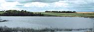
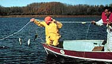
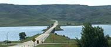
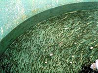
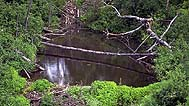

Commercial History
Fisheries Today
Private Aquaculture
Sask. Aquaculture
Farm Aquaculture
|
History of Commercial Fishing
 Commercial fishing in Saskatchewan has been around for over 100 years. Find out more about the history of this unique industry.
 Find out what it is like to be a commercial fisherman. Where are the best lakes to fish? Where would you fish and how? Where does your produce go after it is caught? What price will you be paid for your harvest? What type of competion will you be up against? Check here for the latest infromation.
 Lake Diefenbaker in the middle of the prairies is home to over 800,000 rainbow trout. But, don't think you can catch them with your rod and reel. There is a business enterprise here called "commercial aquaculture" or "fish farming". The fish are the 'livestock' of the farm. Aquaculture is which is quickly growing popularity around the world. Countries such as China and Japan practise "fish farming" on a very large scale.
|
|
Aquaculture in Saskatchewan
 Setting up an aquaculture venture is not as easy as you might think. Here is a checklist you might want to check out before starting such a venture.
Aquaculture on the Farm  The pond on your land could support an aquaculture operation...or could it? What type of fish would be the best choice in your pond? Where do you obtain stock? How do you harvest the fish?
|